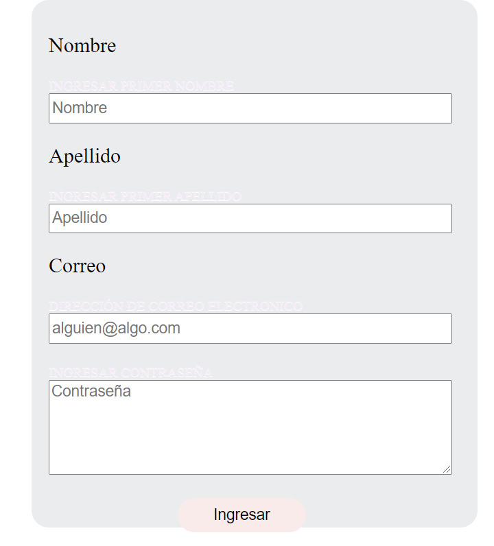
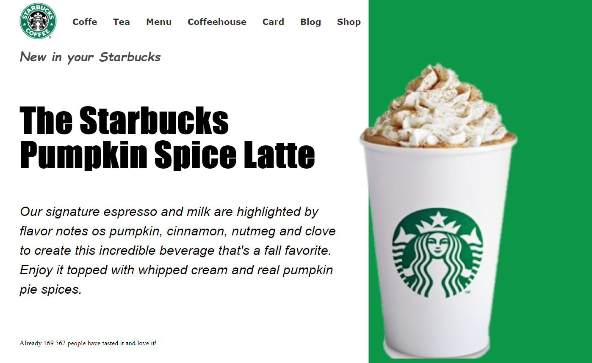
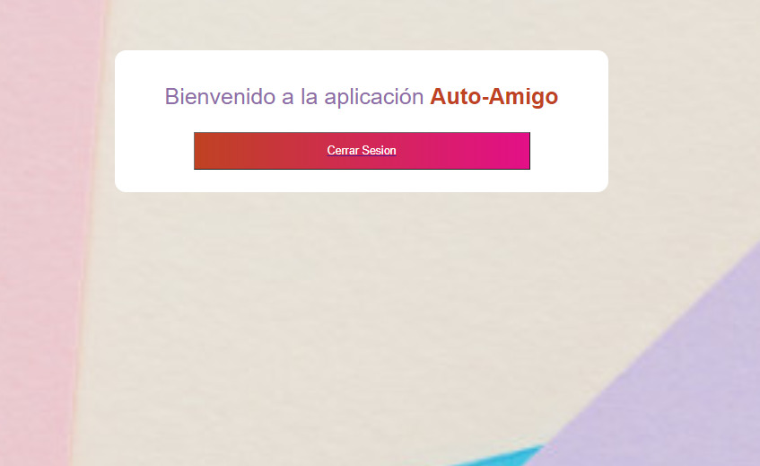
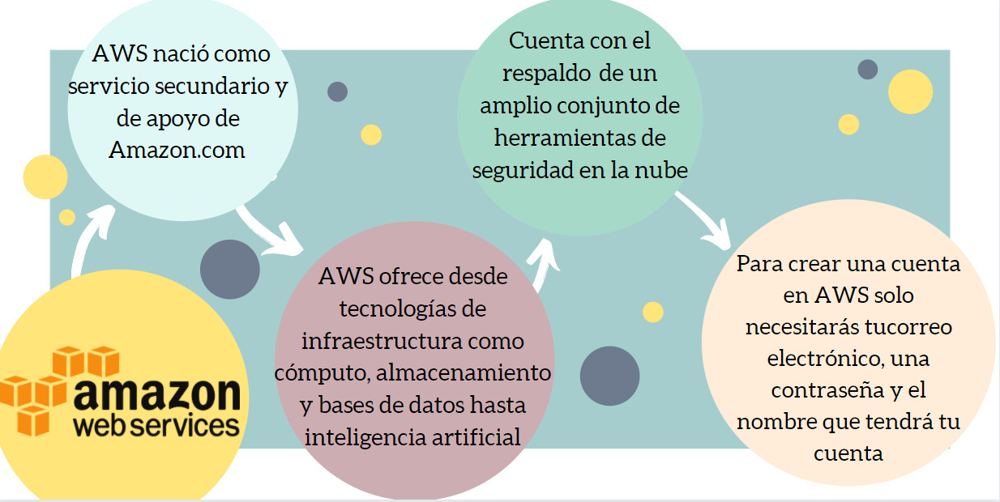
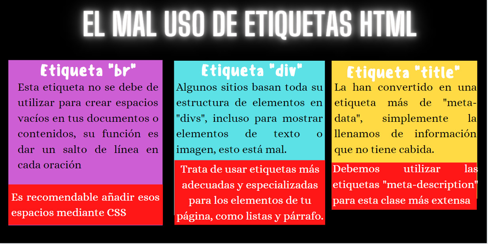

Acerca de Mi
Me llamo Jessica Barragán Rodríguez pero mi familia y amigos me dicen Jessy, aunque personalmente me gusta más el diminutivo Jess, actualmente tengo 20 años y estudio en la Universidad Autónoma de Querétaro, en la facultad de Informática y estoy en la carrera de Licenciatura en Informatica.
Personalmente me encantan las peliculas y series de musicales como Mamma mia y glee, me encanta la atmosfera que crean con las canciones. Y ultimamente tengo un nuevo gusto por los Dramas coreanos de Netflix aunque son un poco absurdos pero son muy romanticos, y es otro genero que me encanta .



otras habilidades

